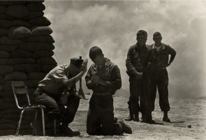
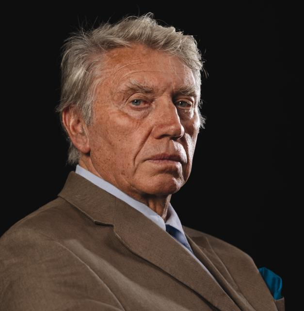
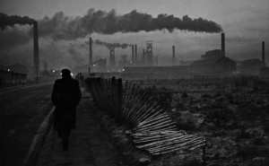
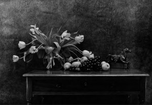

DON MCCULIN
Don McCullin is a British photojournalist, particularly recognized for his war photography and images of urban strike. He has specialised in examining the underside of society, and his photographs have depicted the unemployed, downtrodden and impoverished. The language of reportage photography is nearly always composed in black & white, with its best exponents utilising monochrome. McCullin eschews colour in his work for a very deliberate reason. 'I think colour takes you on another journey,' he explains. 'With me, I've always been a black & white photographer.'

FEATURED WORKS

West Hartlepool, 1963 A man walking towards his work at the Steel Foundry
